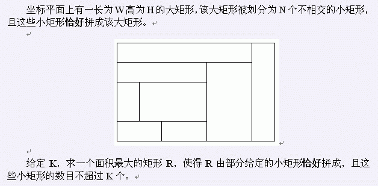

BZPRO
#1936. [Shoi2004]Rect 矩形
内存限制：64 MiB
时间限制：10 Sec
提交
提交记录
讨论
题目描述

输入格式
所有数据都是非负整数。第一行为 W、H （不超过10000），表示大矩形的长和宽。第二行为N、K（1 ≤ K ≤ N ≤ 2000）。接下来 N行，每行四个整数X1、Y1、X2、Y2，表示小矩形对角两顶点的坐标，满足 0 ≤ X1 < X2 ≤ W 0 ≤ Y1 < Y2 ≤ H
输出格式
只有一行：R的面积。
样例
样例输入
7 5
8 3
0 0 2 1
2 0 4 1
0 1 1 3
1 1 4 3
0 3 4 4
0 4 6 5
4 0 6 4
6 0 7 5
样例输出
12
数据范围与提示